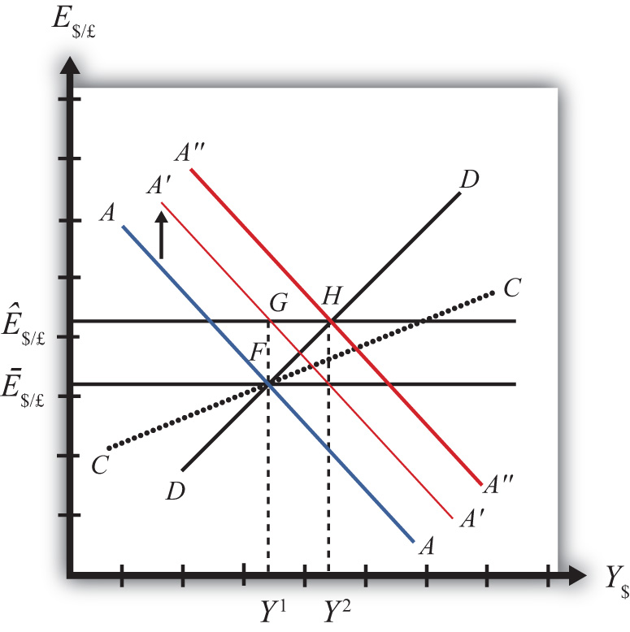
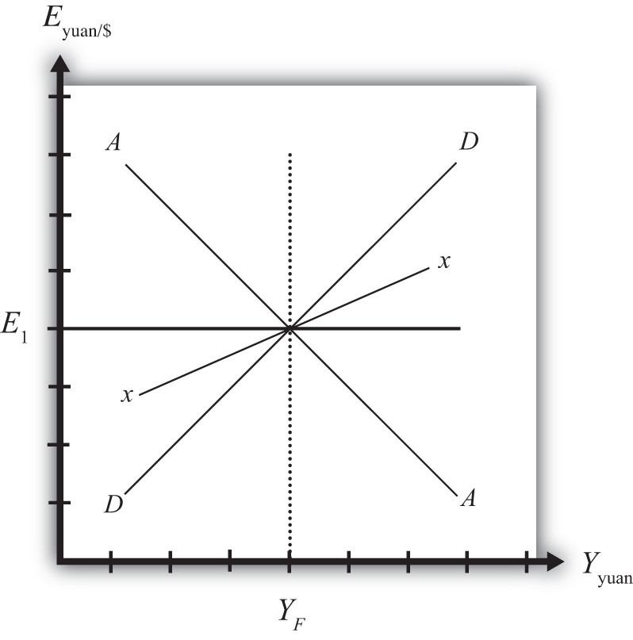

In this section, we use the AA-DD model to assess the effects of exchange rate policy in a fixed exchange rate system. In a sense we can say that the government’s decision to maintain a fixed exchange is the country’s exchange rate policy. However, over time, the government does have some discretion concerning the value of the exchange rate. In this section, we will use “exchange rate policy” to mean changes in the value of the fixed exchange rate.
If the government lowers the value of its currency with respect to the reserve currency or to gold, we call the change a devaluation. If the government raises the value of its currency with respect to the reserve currency or to gold, we call the change a revaluation. The terms devaluation and revaluation should properly be used only in reference to a government change in the fixed exchange rate since each term suggests an action being taken. In contrast, natural market changes in supply and demand will result in changes in the exchange rate in a floating system, but it is not quite right to call these changes devaluations or revaluations since no concerted action was taken by anyone. Nonetheless, some writers will sometimes use the terms this way.
In most cases, devaluations and revaluations occur because of persistent balance of payments disequilibria. We will consider these situations in Chapter 23 "Policy Effects with Fixed Exchange Rates", Section 23.6 "Currency Crises and Capital Flight" on balance of payments crises and capital flight. In this section, we will consider the basic effects of devaluations and revaluations without assuming any notable prior events caused these actions to occur.
Suppose the United States fixes its exchange rate to the British pound at the rate Ē$/£. This is indicated in Figure 23.3 "Effects of a Devaluation" as a horizontal line drawn at Ē$/£. Suppose also that the economy is originally at a superequilibrium shown as point F with gross national product (GNP) at level Y1. Next, suppose the U.S. central bank (or the Fed) decides to devalue the U.S. dollar with respect to the British pound corresponding to an increase in the fixed rate from Ē$/£ to Ê$/£. Recall that a devaluation corresponds to an increase in the $/£ exchange rate. Assume that there was no anticipation of the devaluation and that it comes about as a complete surprise to all market participants.
Figure 23.3 Effects of a Devaluation
The first effect of the devaluation, of course, is that the exchange rate rises. Immediately the economy moves from F to G on the diagram. It may seem that this would move the economy off the AA curve, but instead the AA curve shifts up with the devaluation to A′A′. This occurs because the AA curve is a function of the expected exchange rate. As long as investors believe that the new exchange rate will now remain fixed at its new rate (Ê$/£), the expected future exchange rate will immediately rise to this new level as well. It is this increase in E$/£e that causes AA to shift up.
When at point G, however, the economy is not at a superequilibrium. Because of the dollar devaluation, the real exchange rate has increased, making foreign goods relatively more expensive and U.S. goods relatively cheaper. This raises aggregate demand, which at the new exchange rate (Ê$/£) is now at the level where the exchange rate line crosses the DD curve at point H.
Since the economy, for now, lies at G to the left of point H on the DD curve, aggregate demand exceeds supply. Producers will respond by increasing supply to satisfy the demand, and GNP will begin to rise.
As GNP rises, real money demand will rise, causing an increase in U.S. interest rates, which will raise the rate of return on U.S. assets. Investors will respond by increasing their demand for U.S. dollars on the foreign exchange (Forex) market, and there will be pressure for a dollar appreciation.
To maintain the fixed exchange rate, however, the U.S. Fed will have to automatically intervene on the Forex and sell dollars to satisfy the excess demand in exchange for pounds. This represents a balance of payments surplus since by buying pounds on the Forex the United States is adding to its stock of foreign reserves. A balance of payments surplus in turn causes an increase in the U.S. money supply, which will shift the AA curve to the right.
As GNP rises toward Y2 at point H, the AA curve will shift right with the Fed intervention to maintain the equilibrium exchange rate at the new fixed value, which is Ê$/£. The final superequilibrium occurs at point H where excess aggregate demand is finally satisfied.
The final result is that a devaluation in a fixed exchange rate system will cause an increase in GNP (from Y1 to Y2) and an increase in the exchange rate to the new fixed value in the short run. Since the new equilibrium at H lies above the original CC curve representing a fixed current account balance, a devaluation will cause the current account balance to rise. This corresponds to an increase in a trade surplus or a decrease in a trade deficit.
A revaluation corresponds to change in the fixed exchange rate such that the country’s currency value is increased with respect to the reserve currency. In the AA-DD model, a U.S. dollar revaluation would be represented as a decrease in the fixed $/£ exchange rate. The effects will be the opposite of those described above for a devaluation. A complete description is left for the reader as an exercise.
The quick effects, however, are as follows. A revaluation in a fixed exchange rate system will cause a decrease in GNP and a decrease in the fixed exchange rate in the short run. A revaluation will also cause the current account balance to fall. This corresponds to a decrease in a trade surplus or an increase in a trade deficit.
Vietnam fixes its currency, the Vietnamese dong (VND), to the US dollar. Suppose Vietnam can be described using the AA-DD model. Consider changes in the exogenous variables in Vietnam in the left column. Suppose each change occurs ceteris paribus. Indicate the short-run effects on the equilibrium values of Vietnamese GNP, the Vietnamese interest rate (iVND), the Vietnamese trade deficit, and the exchange rate (EVND//$). Use the following notation:
+ the variable increases
− the variable decreases
0 the variable does not change
A the variable change is ambiguous (i.e., it may rise, it may fall)
| GNP | iVND | EVND/$ | |
|---|---|---|---|
| A devaluation of the Vietnamese dong | |||
| A revaluation of the Vietnamese dong |
Consider the following occurrences. Use the AA-DD model to determine the impact on the variables (+, −, 0, or A) from the twin-deficit identity listed along the top row. Consider only short-run effects (i.e., before inflationary effects occur) and assume ceteris paribus for all other exogenous variables.
| Impact on | ||||
|---|---|---|---|---|
| Sp | I | IM − EX | G + TR − T | |
| A currency devaluation under fixed exchange rates | ||||
| A currency revaluation under fixed exchange rates | ||||
China maintains an exchange rate fixed to the U.S. dollar at the rate E1. Use the following AA-DD diagram for China to depict answers to the questions below. Suppose China’s current account is in surplus originally. Suppose YF indicates the full employment level of output.
Figure 23.4
